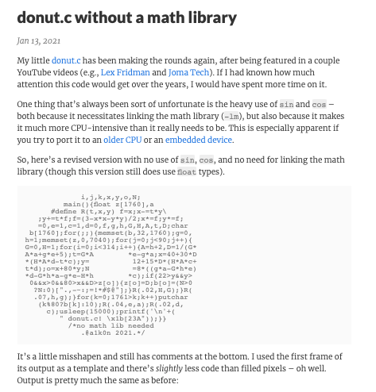

donut.c without float types
「ターミナルでドーナツ」を発見、秀逸っ。
— Yuichi Ray Matta | 時を贈るおじさん (@yrm__) March 21, 2021
I found "A donut in the terminal", cool works!https://t.co/qDBJ73WRJL https://t.co/2YVUkxRcVW pic.twitter.com/u4x9cruvrE
I found a funcy c program.

Even the source code is in the shape of a donut, which is very cool.
It doesn't use a math library to be used on embedded device, but still uses float types (I'm sorry, already there was a version that is bottom of the page.). In my PC "IchigoJam", it doesn't have any float instructions.
int s(int d){static
const unsigned char tbl[]={3,8,
12,17,21,26,30,35,39,43,48,52,57,61,65,
70,74,78,82,87,91,95,99,103,107,111,115,119,
123,127,131,135,138,142,146,149153,157,160,164,167
,170,174,177,180,183,186,189,192,195,198,201,203,206,209
,211,214,216,218,221,223,225,227,229,231,233,235,236,238,240,
241,242,244,245,246,247,248,249,250,251,252,253,253,254,254,254
,255,255,255,255};int pm=1;if(d<0){d*=-1;pm*=-1;}d%=360;if(180<d)pm
*=-1;if(180<=d)d-=180;if(90<d)d=180-d;return d?(tbl[d-1]+1)*pm:0;}int
v(long long a,long long b) {int aL=*(int*)((void*)&a+
4);int bL=*(int*)((void*) &b+4);int bR=*(int*)((void
*)&b+0);return bL?aL/bL: aL*(0xffffffff/bR);}int
main(){const int W=80; const int H=22;int k,A=
0,B=0,i,j,z[W*H];char b [W*H];printf("\x1b[2J");
while(1){memset(b,32, sizeof(b));memset(z,0,
sizeof(z));for(j=0;j<360 ;j+=4){for(i=0;i<360;i+=
1){int c=s(i),d=s(j+90) ,e=s(A),f=s(j),g=s(A+90
),l=s(i+90),m=s(B+90) ,n=s(B);int h=d*1000/256
+2000;int D=v(65536000000 ,(c*h*e+f*g*1000+327680000
));int t=(c*h*g-f*e*1000) /0x10000;int x=v(32768LL*
1000000*W+30LL*D*(l*h*m-t *n*256),65536000000);int
y=v(32768000000*H+15LL*D* (l*h*n+t*m*256),6553600LL*
10000);int o=W*y+x;int N=v(8LL*((256LL*f*e-1LL*c*d*g)*m-256LL*c*
d*e-256LL*f*g-256LL*l*d*n),0x100000000);if(0<y&&y<H&&0<x&&x<
W&&z[o]<D){z[o]=D;b[o]=".,-~:;=!*#$@"[N>0?N:0];}}}printf
('\n'+" donut.c! \x1b[H");for(k=0;W*H+1>k;k++){putchar
(k%W?b[k]:'\n');}usleep(10000);A+=2;B+=1;}}/*no
math lib needed @a1k0n 2021. && no float
needed @yrm 2021. enjoy with
a hot coffee*/
So I made a version that without float types. Please accept a bit clunky shapes. ;)
The donut.c in my new PC 'IchigoJam typeR'. pic.twitter.com/rvLdHfMUPC
— Yuichi Ray Matta | 時を贈るおじさん (@yrm__) March 25, 2021
It finally worked!
Thank you funcy program @a1k0n.